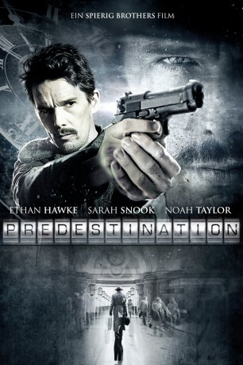

#116 Predestination 
 
 IMDB-Wertung: 7.5 / 10
IMDB-Wertung: 7.5 / 10  Metascore: 69
Metascore: 69 
Als der zunächst unscheinbar wirkende John die Bar betritt, ahnt der Barkeeper noch nicht, was nun auf ihn zukommt. John überredet ihn zu einer Wette und verspricht ihm, die außergewöhnlichste Geschichte auf Lager zu haben, die dem Barkeeper je zu Ohren gekommen ist. Der Wetteinsatz besteht aus einer Flasche Whiskey. Bereits bei den ersten Worten von John wird dem Barkeeper klar, das er verloren hat: "Als ich ein kleines Mädchen war…" Was nun folgt, ist die traumatische Geschichte von der Kindheit, Jugend und Erwachsenenzeit Johns als Jane, die nach einer Geschlechtsumwandlung zum verbitterten, einsamen John wurde. Der Barkeeper, der einst als Zeitreise Agent tätig war, bietet seinem Gegenüber an, den Menschen ungestraft zu töten, der sein Leben ruiniert hat.
Jahr: 2014
Dauer: 97 Minuten
FSK: 16
Land: Australien Studio: Tiberius FilmTonspuren: DTS - ,
Untertitel:
Auflösung: 1080p (1920×1080) Größe: 7925 MB
Genre: Drama, Mystery, Sci-Fi, Thriller
Regisseur: Michael Spierig, Peter Spierig
Drehbuch: Michael Spierig, Peter Spierig, Robert A. Heinlein
Soundtrack: Peter Spierig
Darsteller:
 Ethan Hawke als The Barkeep
Ethan Hawke als The Barkeep Sarah Snook als The Unmarried Mother
Sarah Snook als The Unmarried Mother Christopher Kirby als Mr. Miles
Christopher Kirby als Mr. Miles- Christopher Sommers als Mr. Miller
- Paul Moder als Boxing Commentator 1
- Cate Wolfe als Beth
- Ben Prendergast als Dr. Clarke
- Olivia Sprague als Jane 5yo
- Tony Nikolakopoulos als Driver
- Lucinda Armstrong Hall als Blonde Classmate
 Noah Taylor als Mr. Robertson
Noah Taylor als Mr. Robertson- Vanessa Crouch als Recruit 1
- Eliza D'Souza als Recruit 2
- Alicia Pavlis als Hooker Girl Recruit
- Christopher Stollery als The Interviewer
- Arielle Carver-O'Neill als Nauseous Girl
- Marky Lee Campbell als Trainer's Assistant
- Rob Jenkins als Mr. Jones
- Elise Jansen als Nurse
- Freya Stafford als Alice
- Kuni Hashimoto als Dr. Fujimoto
- Sara El-Yafi als Lab Technician
- Grant Piro als Boxing Commentator 2 / News Report Announcer
- Christopher Bunworth als Jerry
- Jamie Gleeson als Dirty Hippy
- Christina Tan als Female Reporter
- Dennis Coard als Mayor Davidson
- Milla Simmonds als Baby Jane 1
- Ruby Simmonds als Baby Jane 1
- Carmen Warrington als Grace
- Sharon Kershaw als Abigail
- Charlie Alexander-Powell als Baby Jane 2
- Smith Alexander-Powell als Baby Jane 2
- Katie Avram als Ice Cream Daughter
- Melissa Avram als Ice Cream Mother
- Giordano Gangl als Ice Cream Vendor
- Monique Heath als Jane 10yo
- Sophie Cusworth als Older Fighting Girl
- Finegan Sampson als Fighting Boy
- David Rock als Orphanage Administrator 1
- Richard Whybrow als Orphanage Administrator 2
- Felicity Steel als Mrs. Rosenblum
- Maja Sarosiek als Space Corp Receptionist
- Sophie Van Den Akker als Recruit 3
- Madeleine Dixon als Recruit 4
- Hayley Butcher als Recruit 5
- Rebecca Cullinan als Dumb Girl Recruit
- Ewa Bartecki als Lazy Girl Recruit
- Alexis Fernandez als Marcy
- Kristie Jandric als Physical Fitness Trainer
Datei: X:\2014(N-Z)\Predestination (2014, FSK12, 1920x1080) 3D.mkv seit 06.02.2015
Festplatte: HD 2013(I-Z)-2014(A-Z)
 Es gibt insgesamt 163 Filme in der Gruppe '2014(N-Z)'
Es gibt insgesamt 163 Filme in der Gruppe '2014(N-Z)'